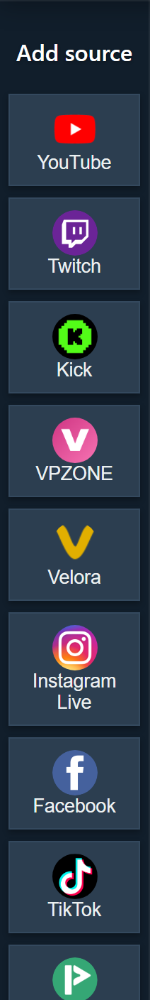

Milleks rakendus on mõeldud
Töölauarakendus haldab Social Streami allikaaknaid teie tavalisest brauserist eraldi. See võib aidata allikaid korrastada ja leevendada brauseri taustavahekaartide aeglustamise probleeme. Rakendus erineb Chrome’ist ega jaga automaatselt teie Chrome’i sisselogimist ega küpsiseid.

Režiiminimed
Mõnel allikal on rohkem kui üks ühendusrežiim. Õige režiim sõltub platvormist, sisselogimisolekust ja sellest, kas vajate rikkalikumaid sündmusi või lihtsat lehe jäädvustamist.

| Režiim | Selge tähendus | Kasutage, kui |
|---|---|---|
| Standard | Rakendus avab tavalise platvormi/allika lehe ja loeb renderdatud lehte. | Vajate lihtsaimat nähtavat lehehõivet, sisselogimist või käsitsi kinnitamist. |
| WebSocket/API | Allikas ühendub platvormi API, püsiva reaalajaühenduse või Social Streami allikalehe kaudu. | Platvorm toetab seda ning soovite töökindlamat taustatööd või rohkem sündmuste andmeid. |
| Perioodiline pärimine / pärandrežiim | Ühilduvusviis, mis kontrollib uuendusi eelistatud püsiva reaalajaühenduse asemel. | Uuem ühendusviis ei tööta või on vaja platvormipõhist varuvarianti. |
| TikTok Auto | Rakendus valib sobivaima TikToki ühendusviisi ja võib tõrke korral kasutada varuvarianti. | Te pole kindel, millist TikToki režiimi kasutada. |
Kasutage Standard-režiimi, kui
- Platvorm töötab, kui näete reaalajas lehte või hüpikakna vestlust.
- Sait vajab sisselogimist, viipa lahendamist või nähtava vestluspaneeli avatuna hoidmist.
- Võrdlete rakenduse käitumist Chrome'i laiendusega.
- Soovite tuttavat tõrkeotsingu järjekorda: avage leht, kontrollige vestlust, katsetage dokki ja seejärel OBS-i.
Standardrežiim võib siiski ebaõnnestuda, kui platvorm muudab oma lehe paigutust, blokeerib manustatud/rakenduste brauserid, küsib CAPTCHA-d või peidab vestluse sisselogimise taha.
Kasutage WebSocket- või API-režiimi, kui
- Allikas toetab konkreetselt WebSocket/API režiimi.
- Soovite allikat, mis töötab taustal paremini.
- Vajate sündmuserühmi, mis ei pruugi tavalisel lehelt lugemisel saadaval olla.
- Saate hakkama teenusepakkuja pääsutõendite, konto õiguste, API kasutusulatuste või allikalehe seadistamisega.
WebSocket/API-režiim ei ole alati parem. Autentimise, pääsutõendite, teenusepakkuja juurdepääsu või platvormi API tõrke korral võib Standard-režiimi olla kiirem katsetada.
TikTok rakenduses
TikTok töölauarakenduses ei ole üks režiim. Enne tõrkeotsingut pange alati tähele, milline eelseade on aktiivne.
| TikToki tee | Kasutusjuhtum | Levinud tõrke põhjus |
|---|---|---|
| Automaatne | Enamik kasutajaid võiks alustada sellest. | Rakendus võib kasutada varuvarianti, seega vaadake olekuteksti. |
| Standard | Nähtav TikToki lehe jäädvustamine. | Sisselogimine, CAPTCHA, ümbersuunatud leht või peidetud vestlus. |
| Kohalik allkirjastaja | Rakenduse enda sõnumite lugemise ja vastamise viisid. | Rakenduse TikToki seanss/küpsised peavad kehtima. |
| Perioodiline pärimine / ühilduvus | Varuvariant reaalajaühenduse või allkirjastamise tõrke korral. | Pakub vähem andmeid kui eelistatud ühendusviis. |
| Puhverserver või kohandatud allkirjastamine | Täpsemad seadistused. | Teenusepakkuja saadavus, API-võti, ruumi ID või päringupiirangud. |
Tavaliseks esimeseks katseks lisage TikTok, jätke eelseadistus olekusse Auto, aktiveerige allikas ja vaadake rakenduse olekuteksti.
Mida kontrollida enne OBS-i
- Veenduge, et rakenduse allikas oleks aktiveeritud.
- Kui platvorm nõuab sisselogimist, veenduge, et olete allikaaknas sisse logitud.
- Veenduge, et sama seansi ID-ga dokk võtaks vestlussõnumeid vastu.
- Alles pärast doki toimimist lisage või värskendage OBS-i ülekatte URL.
- Kui Chrome töötab, kuid rakendus mitte, pidage meeles, et rakenduse seansid ja Chrome'i seansid on eraldi.
Levinud parandused
- Chrome on sisse logitud, kuid rakendus ei ole: logige sisse platvormile rakenduse allika aknas või kasutage laiendust jäädvustamise teena.
- Allikas näitab aktiivset olekut, kuid sõnumeid ei saabu: kontrollige režiimi, allika akent, reaalajas URL-i/kasutajanime ja doki seanssi.
- Rakendus kasutab valesid lähtefaile: kontrollige, kas rakendus kasutab Social Streami pakendatud, vahemällu salvestatud, kaug-, beeta-, stabiilseid või kohalikke faile.
- TikTok ebaõnnestub: märkige üles praegune eelseadistus, olekutekst, rakenduse versioon ja see, kas allikas lülitus varurežiimi.
- OBS on tühi: katsetage esmalt dokki. Kui dokk on tühi, pole OBS veel probleem.
Seotud juhend: Platvormi seadistusjuhendi valija.